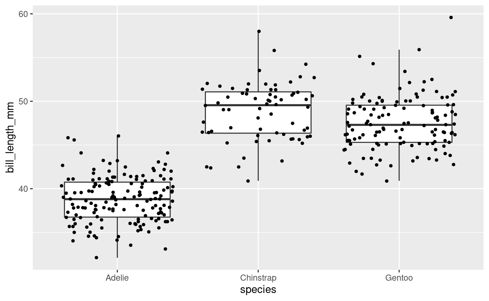
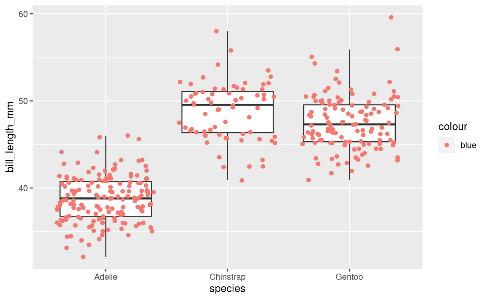
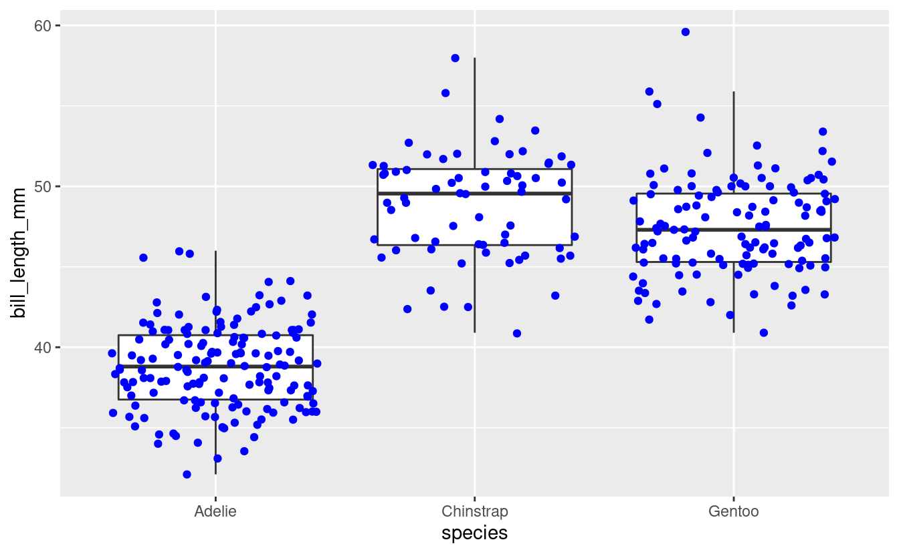
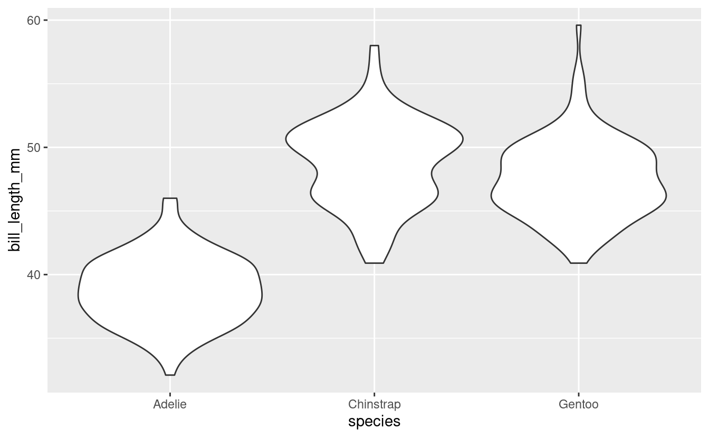
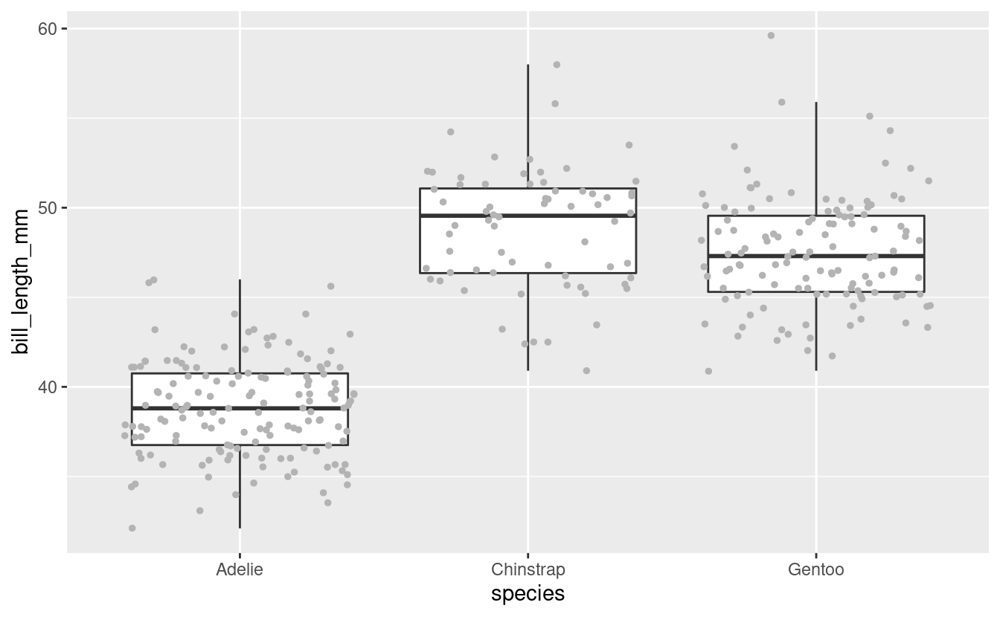
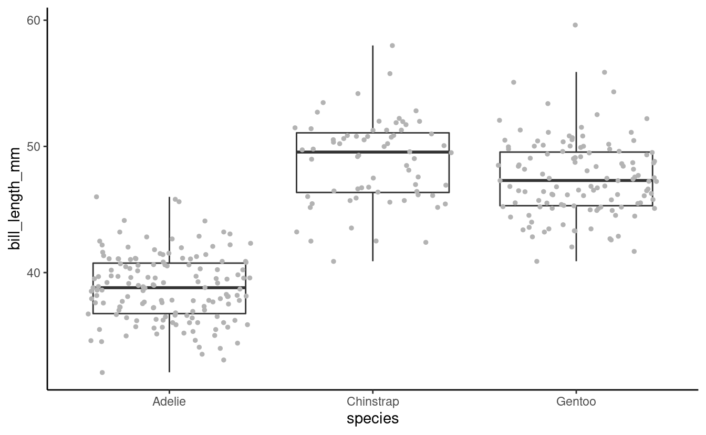
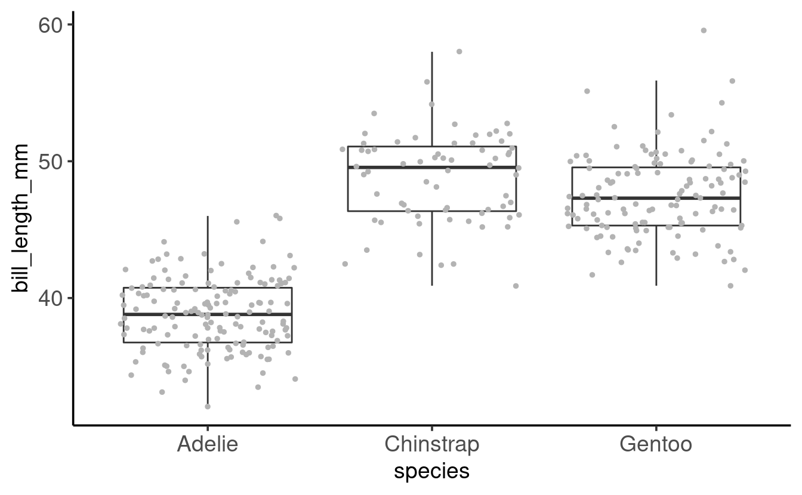
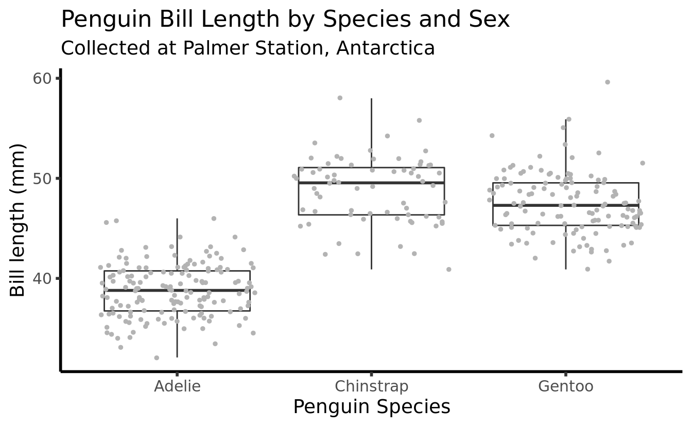
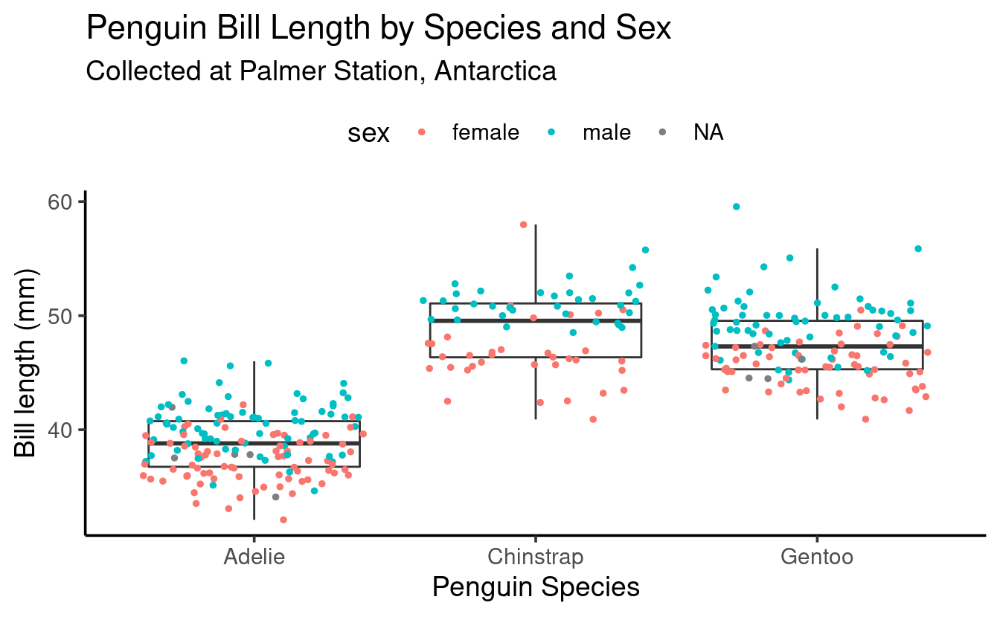
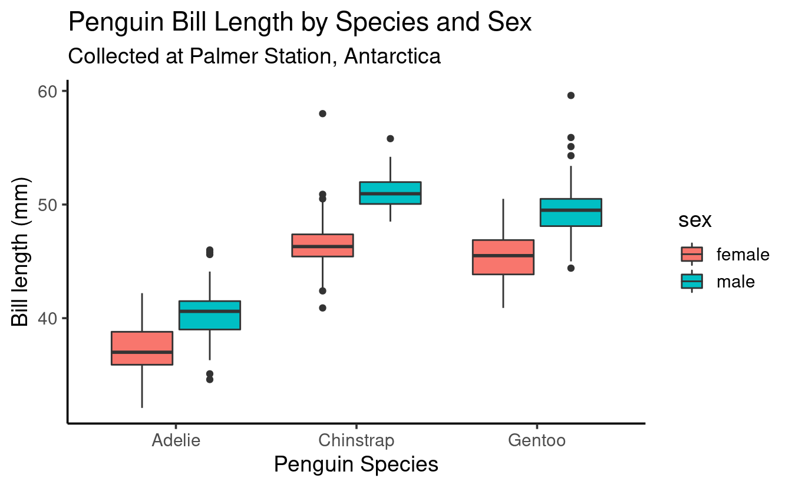

S02E07: Intro to ggplot2 (part 2)
Boxplots, layering, and formatting plots.
New to Code Club?
-
First, check out the Code Club Computer Setup instructions, which also has pointers for if you’re new to R or RStudio.
-
Please open RStudio before Code Club starts to test things out – and in case you run into issues, please join the Zoom call early and we’ll troubleshoot.
New to ggplot2?
-
Check out the last Code Club Session, which was the first of this two-part introduction to ggplot2.
-
You may find this ggplot2 cheat sheet useful!
Introduction
Session goals
-
Get more familiar with building and layering plots using geoms, using a new geom,
geom_boxplot(), as our starting point.
Getting set up
We will continue to work with the data contained in the Palmer Penguins package. You only have to install it if you didn’t do so in a previous session:
install.packages("palmerpenguins")If the package has been installed, you do need to always load it with the library() function – and we’ll also load the tidyverse, which includes the ggplot2 package.
Penguin bill length
We are going to mostly be plotting bill_length_mm, which is the “horizontal” length of the bill: see the image below.

1 - A geom for boxplots
Geom recap
ggplot2’s “geoms” are basically plot types of which there are quite a few available (see the cheatsheet). Last week, we saw two geoms: geom_point() to plot individual data points, and geom_smooth() to fit a line to data points.
While doing so, we also saw two other properties of ggplot2 and its geoms:
-
Geoms can be layered on top of each other.
-
Geoms can simply plot the data “as is” (
geom_point()) or can perform computations under the hood, and show the results of those computations (geom_smooth()).
Let’s use a new geom to get a little more fluent with ggplot2 basics.
Boxplots
A boxplot is a very useful type of plot that shows you the median as well as the variation of a distribution. ggplot2 has the geom geom_boxplot() to create boxplots – another example of a geom that does calculations for us prior to plotting.
Let’s make a boxplot that shows the distribution of penguin bill length (column bill_length_mm in our penguins dataframe) along the y-axis – recall that we use aes() to refer to a column in the data frame from which the data should be taken:
ggplot(data = penguins) +
geom_boxplot(mapping = aes(y = bill_length_mm))
#> Warning: Removed 2 rows containing non-finite values (stat_boxplot).

Why do we get the warning shown above? (click here)
We got the following warning:
#> Warning: Removed 2 rows containing non-finite values (stat_boxplot).
We get this warning because 2 rows contain NAs for the variable we are plotting, bill_length_mm.
We could take a look at those rows as follows:
penguins %>% filter(is.na(bill_length_mm))
#> # A tibble: 2 × 8
#> species island bill_length_mm bill_depth_mm flipper_length_… body_mass_g sex
#> <fct> <fct> <dbl> <dbl> <int> <int> <fct>
#> 1 Adelie Torge… NA NA NA NA NA
#> 2 Gentoo Biscoe NA NA NA NA NA
#> # … with 1 more variable: year <int>And we could remove those rows as follows, saving the results in a new dataframe:
The nitty-gritty of boxplots: what is shown exactly? (click here)
- Lower whisker = smallest observation greater than or equal to lower hinge - 1.5 * IQR
- Lower hinge/bottom line of box part of boxplot = 25% quantile
- Middle line = median = 50% quantile
- Upper hinge/top line of box part of boxplot = 75% quantile
- Upper whisker = largest observation less than or equal to upper hinge + 1.5 * IQR
That worked, but the plot shows the distribution of bill lengths across all 3 species together, which is not that informative. To separate species along the x-axis, we can map the species column to x:
ggplot(data = penguins) +
geom_boxplot(mapping = aes(y = bill_length_mm, x = species))
#> Warning: Removed 2 rows containing non-finite values (stat_boxplot).

Great! We can see, at a glance, that Adelie Penguins tend to have considerably shorter bills than the other two species. Chinstrap’s bills are just a bit longer than those of Gentoos, but the longest-billed bird is a Gentoo.
2 - Adding a plot layer
To get an even better sense of the distribution of bill lengths, and also of our sample sizes, we may want to add the raw data points to our boxplot using geom_point().
(You may have noticed that in the previous plot, a Gentoo Penguin outlier was shown as a point. To prevent plotting that point twice, we will add outlier.shape = NA to the boxplot call, a somewhat roundabout way of saying that we don’t want to plot outliers.)
ggplot(data = penguins) +
geom_boxplot(mapping = aes(y = bill_length_mm, x = species),
outlier.shape = NA) +
geom_point()
#> Warning: Removed 2 rows containing non-finite values (stat_boxplot).
#> Error: geom_point requires the following missing aesthetics: x and yWhy did this not work?
We had previously species the aesthetics mapping inside the geom_boxplot() call – that is, we set it for that geom only (“local aesthetics”) and not for the entire plot (“global aesthetics”). To add a geom_point() layer with the same aesthetics, we can do one of two things:
- Set the aesthetic mapping globally, i.e. inside the
ggplot()call, or - Set a local aesthetic mapping also inside
geom_point().
Let’s do the former, so we are not repeating ourselves:
ggplot(data = penguins,
mapping = aes(y = bill_length_mm, x = species)) +
geom_boxplot(outlier.shape = NA) +
geom_point()
#> Warning: Removed 2 rows containing non-finite values (stat_boxplot).
#> Warning: Removed 2 rows containing missing values (geom_point).

This doesn’t look too good because many of the points are plotted on top of each other. We can use a few arguments to geom_point() to make some changes:
-
Add
position = "jitter"to thegeom_point()call to introduce a small amount of randomness to our points to make us able to see them better. -
Add
size = 1to make the point size a little smaller (1.5 is the default).
ggplot(data = penguins,
mapping = aes(y = bill_length_mm, x = species)) +
geom_boxplot(outlier.shape = NA) +
geom_point(position = "jitter", size = 1)
#> Warning: Removed 2 rows containing non-finite values (stat_boxplot).
#> Warning: Removed 2 rows containing missing values (geom_point).

Note that position = "jitter" and size = 1 are not specified as mappings (i.e., not inside mapping = aes()): here, we are not mapping data to the plot, but are just changing some “settings”.
Because jittering is so common, there is also a specialized jittering geom available: geom_jitter() is shorthand for geom_point(position = "jitter").
So, we could have also used the following code to create the same plot:
ggplot(data = penguins,
mapping = aes(y = bill_length_mm, x = species)) +
geom_boxplot(outlier.shape = NA) +
geom_jitter(size = 1)Breakout Rooms I
Exercise 1
-
Run the code below and figure out what the problem is.
(And why do you think ggplot2 creates a legend with the item “blue”, instead of throwing an error?) -
Modify the code to get the originally intended effect: blue points.
ggplot(data = penguins,
aes(y = bill_length_mm, x = species)) +
geom_boxplot(outlier.shape = NA) +
geom_point(mapping = aes(color = "blue"),
position = "jitter")Hints (click here)
- Here is the botched plot:
ggplot(data = penguins,
aes(y = bill_length_mm, x = species)) +
geom_boxplot(outlier.shape = NA) +
geom_point(mapping = aes(color = "blue"),
position = "jitter")
#> Warning: Removed 2 rows containing non-finite values (stat_boxplot).
#> Warning: Removed 2 rows containing missing values (geom_point).

- Should
color = "blue"be a mapping, that is, should it be part of themapping = aes()argument?
Solution (click here)
-
The problem with the original code is that
color = "blue"should not be a mapping. -
Why ggplot2 does not throw an error: the
mappingargument is used to map data to an aesthetic like point color. Normally, that data is a column in the dataframe, but because the code quotes “blue” (color = "blue"instead ofcolor = blue), ggplot2 does not assume it is a column and instead creates a variable on the fly that just contains the value “blue”. -
The correct code to color points blue:
ggplot(data = penguins,
mapping = aes(y = bill_length_mm, x = species)) +
geom_boxplot(outlier.shape = NA) +
geom_point(color = "blue",
position = "jitter")
#> Warning: Removed 2 rows containing non-finite values (stat_boxplot).
#> Warning: Removed 2 rows containing missing values (geom_point).

Exercise 2
Violin plots are somewhat similar to boxplots, but show a density distribution. Using Google, find out which ggplot2 geom creates a violin plot, and then make one plotting bill length by species like we have done for boxplots.
Hints (click here)
-
geom_violin()is the geom that creates violin plots. -
Other than the geom function, you can leave the code the same as in the previous examples.
Solution (click here)
ggplot(data = penguins,
mapping = aes(y = bill_length_mm, x = species)) +
geom_violin()
#> Warning: Removed 2 rows containing non-finite values (stat_ydensity).

3 - Intro to formatting plots
So far, we have mostly been concerned with what we are plotting, and haven’t paid much attention to how our plot looks. But I, for one, dislike that gray background to the plot, and perhaps the axis labels are a little small?
ggplot2 offers many options to modify the look of our plot. There are so many that it isn’t really possible to remember even the majority of them. Therefore, even for daily users of ggplot2, creating a publication-ready figure will usually involve some Googling or checking the ggplot2 documentation.
Let’s have a look at some of the most commonly used options to change the look of ggplot2 plots.
A starting plot
We’ll start with the following plot, similar to one we have created before:
ggplot(data = penguins,
mapping = aes(x = species, y = bill_length_mm)) +
geom_boxplot(outlier.shape = NA) +
geom_point(position = "jitter", size = 1, color = "grey70")
#> Warning: Removed 2 rows containing non-finite values (stat_boxplot).
#> Warning: Removed 2 rows containing missing values (geom_point).

(Note the addition of color = "grey70" to make the points less dominant in the plot.
See this PDF for an overview of named colors in R.)
4 - Formatting with theme() and more
The quickest way to modify the overall look and feel of our plot is by using a different “complete theme”. The default theme is theme_gray(), which comes with that gray background and many other settings that control what the plot looks like.
The ggplot2 documentation has a list of complete themes that shows you what they look like.
Let’s switch to a different theme, theme_classic(), for our penguin boxplot:
ggplot(data = penguins,
mapping = aes(x = species, y = bill_length_mm)) +
geom_boxplot(outlier.shape = NA) +
geom_point(position = "jitter", size = 1, color = "grey70") +
theme_classic()
#> Warning: Removed 2 rows containing non-finite values (stat_boxplot).
#> Warning: Removed 2 rows containing missing values (geom_point).

These complete theme functions (theme_<theme-name>) also take a few arguments –
base_size is very useful if we want to simultaneously change the size of all text labels:
ggplot(data = penguins,
mapping = aes(x = species, y = bill_length_mm)) +
geom_boxplot(outlier.shape = NA) +
geom_point(position = "jitter", size = 1, color = "grey70") +
theme_classic(base_size = 14)
#> Warning: Removed 2 rows containing non-finite values (stat_boxplot).
#> Warning: Removed 2 rows containing missing values (geom_point).

This retains the relative sizes of different labels. For instance, note that in both plots, the “axis titles” (species on x, bill_lenth_mm on y) are larger than the “axis text” (the labels at the tick marks).
If we wanted to change individual theme components like those, we would need to use the theme() function (check its documentation page to see the many possible arguments).
For example, to make axis titles and axis text/labels the same size:
ggplot(data = penguins,
mapping = aes(x = species, y = bill_length_mm)) +
geom_boxplot(outlier.shape = NA) +
geom_point(position = "jitter", size = 1, color = "grey70") +
theme_classic(base_size = 14) +
theme(axis.text = element_text(size = 14),
axis.title = element_text(size = 14))
#> Warning: Removed 2 rows containing non-finite values (stat_boxplot).
#> Warning: Removed 2 rows containing missing values (geom_point).

5 - Adding labels to our plot
Right now, the axis titles are simply the names of the columns that we used in the mapping. The y-axis title in particular (bill_length_mm) could be improved. We might also want to add a title and even a subtitle to our plot.
We can do all of this with the labs() function as follows:
ggplot(data = penguins,
mapping = aes(x = species, y = bill_length_mm)) +
geom_boxplot(outlier.shape = NA) +
geom_point(position = "jitter", size = 1, color = "grey70") +
theme_classic(base_size = 14) +
labs(title = "Penguin Bill Length by Species",
subtitle = "Collected at Palmer Station, Antarctica",
x = "Penguin species", # x-axis label
y = "Bill length (mm)") # y-axis label
#> Warning: Removed 2 rows containing non-finite values (stat_boxplot).
#> Warning: Removed 2 rows containing missing values (geom_point).

Breakout Rooms II
Exercise 3
-
Modify the code used to produce the last plot (just above this exercise) to try several of the themes from the list of complete themes.
Do you have a preference?
The list of complete themes also shows that these functions have a few more arguments than the base_size one we explored.
-
Bonus: Change the
base_line_size. What does it do? -
Bonus (may not work out of the box on Windows): Using a different font family can nicely shake things up – this is the
base_familyargument. Most standard font family names (e.g. see this list) should work. For instance, you can tryOptima,Verdana,Times New Roman,Courier, orcursive.
Example solution (click here)
With theme_bw() and:
base_line_size = 1(thicker axis lines)- the
cursivefont family usingbase_family = cursive
ggplot(data = penguins,
mapping = aes(x = species, y = bill_length_mm)) +
geom_boxplot(outlier.shape = NA) +
geom_point(position = "jitter", size = 1, color = "grey70") +
theme_bw(base_size = 14,
base_line_size = 1,
base_family = "cursive") +
labs(title = "Penguin Bill Length by Species and Sex",
subtitle = "Collected at Palmer Station, Antarctica",
x = "Penguin Species",
y = "Bill length (mm)")
#> Warning: Removed 2 rows containing non-finite values (stat_boxplot).
#> Warning: Removed 2 rows containing missing values (geom_point).

Exercise 4
- Modify your code from Exercise 3 to color the jittered points, but not the boxplots, according to sex.
As we also saw last week, a legend should have automatically appeared when mapping color to a variable. But what if we wanted to move the legend from the right to the top of the plot?
- Scroll through the
theme()documentation and try and find the argument that controls the position of the legend. Then, use this argument to move the legend to the top.
Hints (click here)
-
To color points by sex without modifying the boxplots, add the mapping locally for
geom_point()only. -
To move the legend, use the
legend.positionargument oftheme().
Solution (click here)
- Color points by sex:
ggplot(data = penguins,
mapping = aes(x = species, y = bill_length_mm)) +
geom_boxplot(outlier.shape = NA) +
geom_point(position = "jitter", size = 1,
mapping = aes(color = sex)) +
theme_classic(base_size = 14) +
labs(title = "Penguin Bill Length by Species and Sex",
subtitle = "Collected at Palmer Station, Antarctica",
x = "Penguin Species",
y = "Bill length (mm)")
#> Warning: Removed 2 rows containing non-finite values (stat_boxplot).
#> Warning: Removed 2 rows containing missing values (geom_point).

- Move the legend to the top:
ggplot(data = penguins,
mapping = aes(x = species, y = bill_length_mm)) +
geom_boxplot(outlier.shape = NA) +
geom_point(position = "jitter", size = 1,
mapping = aes(color = sex)) +
theme_classic(base_size = 14) +
theme(legend.position = "top") +
labs(title = "Penguin Bill Length by Species and Sex",
subtitle = "Collected at Palmer Station, Antarctica",
x = "Penguin Species",
y = "Bill length (mm)")
#> Warning: Removed 2 rows containing non-finite values (stat_boxplot).
#> Warning: Removed 2 rows containing missing values (geom_point).

Exercise 5 (bonus)
-
Try to modify one of the previous plots to get separate boxes for each combination of species and sex, and no jittered points (don’t hesitate to look at the hints!).
-
Did you see the
NAsex (i.e., missing data)? Recreate the plot without the missing data.
Hints (click here)
-
Map
sextocolororfill(and continue to mapspeciestox). -
Use
drop_na(sex)to remove rows with anNAin thesexcolumn. You can save the result in a new dataframe and then plot that dataframe, or you can pipe (%>%) the result straight into theggplot()function.
Solution (click here)
This example maps sex to fill, which will “fill” the box with colors (as we saw before, mapping to color colors the lines instead):
penguins %>%
drop_na(sex) %>%
ggplot(mapping = aes(x = species,
y = bill_length_mm,
fill = sex)) + # Now mapping sex to "fill"
geom_boxplot() + # We now do want to see the outliers!
theme_classic(base_size = 14) +
labs(title = "Penguin Bill Length by Species and Sex",
subtitle = "Collected at Palmer Station, Antarctica",
x = "Penguin Species",
y = "Bill length (mm)")

Going further
-
One basic aspect of ggplot2 that we have not touched upon in this or the previous session are “scales”. For instance, to change the colors used in mappings (like our boxplot color), we would need to use scales. For an introduction, see the section on scales from the R for Data Science book.
-
We also didn’t talk about saving plots, which can be done with the
ggsave()function (documentation page). Just be aware that if you don’t specify dimensions with thewidthandheightarguments, they will be taken from the current size of the RStudio plotting window, which is not necessarily what you want.